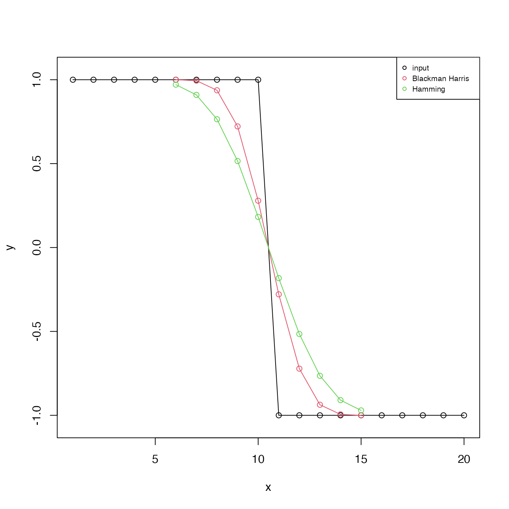

The results can be used in two different ways. CASE 1: for filtering, using
filter() or convolve() or (for the asKernal=TRUE case) using
kernapply(). For the Blackman-Harris filter, the half-power frequency is
at 1/m cycles per time unit, as shown in the “Examples” section.
When using filter() or kernapply() with these filters, use
circular=TRUE. CASE 2: for windowing, if normalize is set to FALSE, as
for example in computing a Welch spectral estimate.
Usage
makeFilter(
type = c("blackman-harris", "rectangular", "hamming", "hann"),
m,
normalize = TRUE,
asKernel = TRUE
)Arguments
- type
a string indicating the type of filter to use. (See Harris (1978) for a comparison of these and similar filters.) The choices for the present function are as follows.
"blackman-harris"yields a modified raised-cosine filter designated as "4-Term (-92 dB) Blackman-Harris" by Harris (1978; coefficients given in the table on page 65). This is also called "minimum 4-sample Blackman Harris" by that author, in his Table 1."rectangular"for a flat filter. (This is just for convenience. Note thatkernel("daniell",....)gives the same result, in kernel form.)"hamming"for a raised-cosine filter designed by Hamming. The mathematical form isa-(1-a)*cos(2*pi*i/(m-1))whereais 0.54 andiisseq(0,m-1)."hann"for a cosine filter that tapers to zero at the ends, i.e. of the same mathematical form as"hamming", but withaequal to 0.5.
- m
length of filter.
- normalize
logical value indicating whether to return numbers that sum to 1. This is TRUE by default, which is useful if the purpose is to lowpass filter a timeseries without altering power in the pass-band. However,
normalize=FALSEis the right choice if the purpose is to window a timeseries, e.g. in computing a spectral estimate using Welch's method (seepwelch()).- asKernel
boolean, set to
TRUEto get a smoothing kernel for the return value.
Value
If asKernel is FALSE, this returns a vector of filter
coefficients, symmetric about the midpoint. The vector will sum to 1 if
normalize=TRUE (i.e. by default). The return value may be used with
filter(), which should be provided with argument circular=TRUE to avoid
phase offsets. If asKernel is TRUE and if normalize is FALSE, an error
is reported. On the other hand, if asKernel is TRUE and normalize is
FALSE, then the return value is a smoothing kernel, which can be applied to a
timeseries with kernapply(), whose bandwidth can be determined with
bandwidth.kernel(), and which has both print and plot methods.
References
F. J. Harris, 1978. On the use of windows for harmonic analysis
with the discrete Fourier Transform. Proceedings of the IEEE, 66(1),
51-83 (http://web.mit.edu/xiphmont/Public/windows.pdf.)
Examples
library(oce)
# Demonstrate step-function response
y <- c(rep(1, 10), rep(-1, 10))
x <- seq_along(y)
plot(x, y, type = "o", ylim = c(-1.05, 1.05))
BH <- makeFilter("blackman-harris", 11, asKernel = FALSE)
H <- makeFilter("hamming", 11, asKernel = FALSE)
yBH <- stats::filter(y, BH)
lines(x, yBH, type = "o", col = 2)
yH <- stats::filter(y, H)
lines(x, yH, type = "o", col = 3)
grid()
legend("topright",
col = 1:3, bg = "white",
legend = c("input", "Blackman Harris", "Hamming")
)
